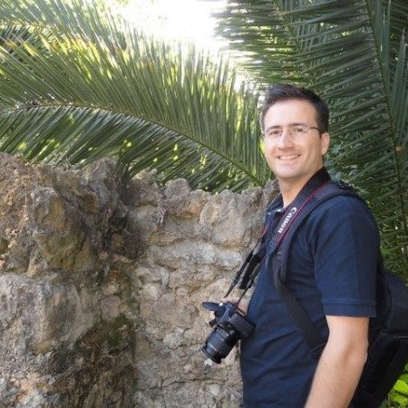

Nuno's Resume
Nuno Ferreira

Summary
IT technician with experience in advertising and marketing. I do occasional professional photography and video work, mostly weddings.
Education
- 10/2014-12/2014 - CECOA - Photography and Video (200h)
- 06/2014-07/2014 - CECOA - Intensive German (150h)
- 10/2013-11/2013 - IEFP - Interpersonal relationships (150h)
- 03/2009-10/2010 - ESTGA - Programming and Information Systems Technician (Level 5)
Work Experience
- 12/2020-01/2024 - Permarind - IT technician
- Webmarketing, Design and Company Image
- Computers Maintenance and Backups
- 01/2017-11/2020 - Seriágueda - Graphic Design
- Graphic Design for Printing
- Digital Printing
- Online Shop Maintenance
- 03/2016-01/2017 - HFA - Warehouse and Electronic Assembly
- Electronic Assembly
- Warehouse work, reception and selection to production
- 05/2015-11/2015 - Ename - Hardware Technician
- Tablets and Mobile Phones Repair
Skills
- Software
- Corel Draw
- Photoshop
- Dreamweaver
- Premiere
- Wordpress
- MS Office
- Languages
- 5/5 - Portuguese
- 4/5 - English
- 2/5 - Spanish
- 1/5 - French
- Hobbies
- Travel with Family
- Watching Movies